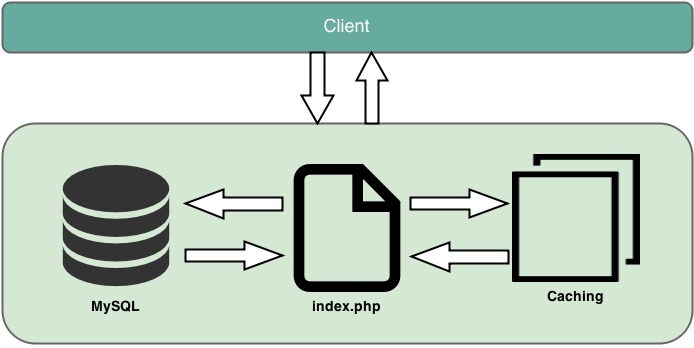

Wikipedia has multi-layer, distributed caching structure:
First layer: Reverse caching proxies(Squids and Varnish)
Second layer: In-memory object caching
Third layer: Memcached
Fourth layer: Opcode cache

MediaWiki Layered style
State - Logic - Display
Client programs are web based Javascript clients and end-user applications that can use API to login, get data and post changes.
Server application is high-level API with read and write interface.It supports client libraries not only written in Javascript but also in Python and .NET
In state layer MediaWiki has relational database backend with additional database abstraction and query abstraction layers to simplify database access for developers.
MediaWiki Code on Demand
MediaWiki has ResourceLoader code agent that developed to optimize delivery of Javascript and CSS assets. It works by loading Javascript and CSS assets on demand, minifies the code, reduces loading and parsing time when features are unused.